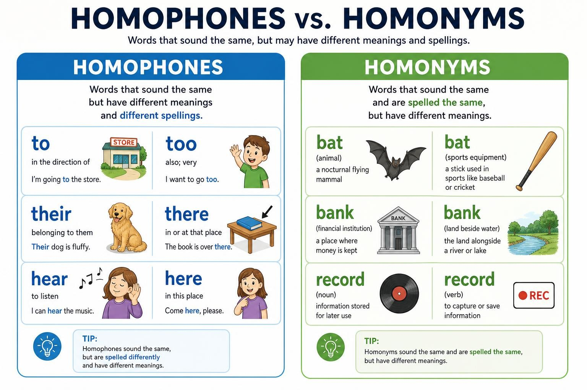
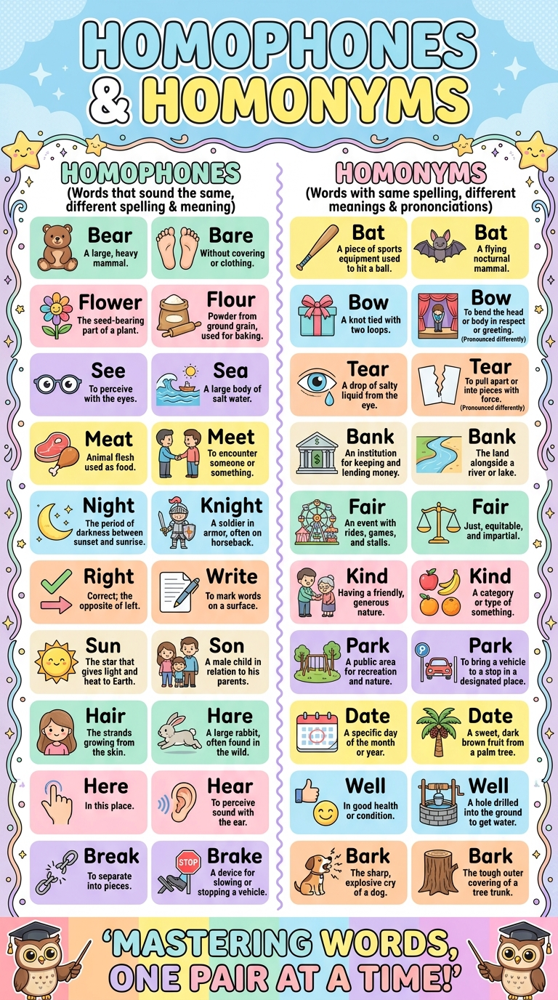
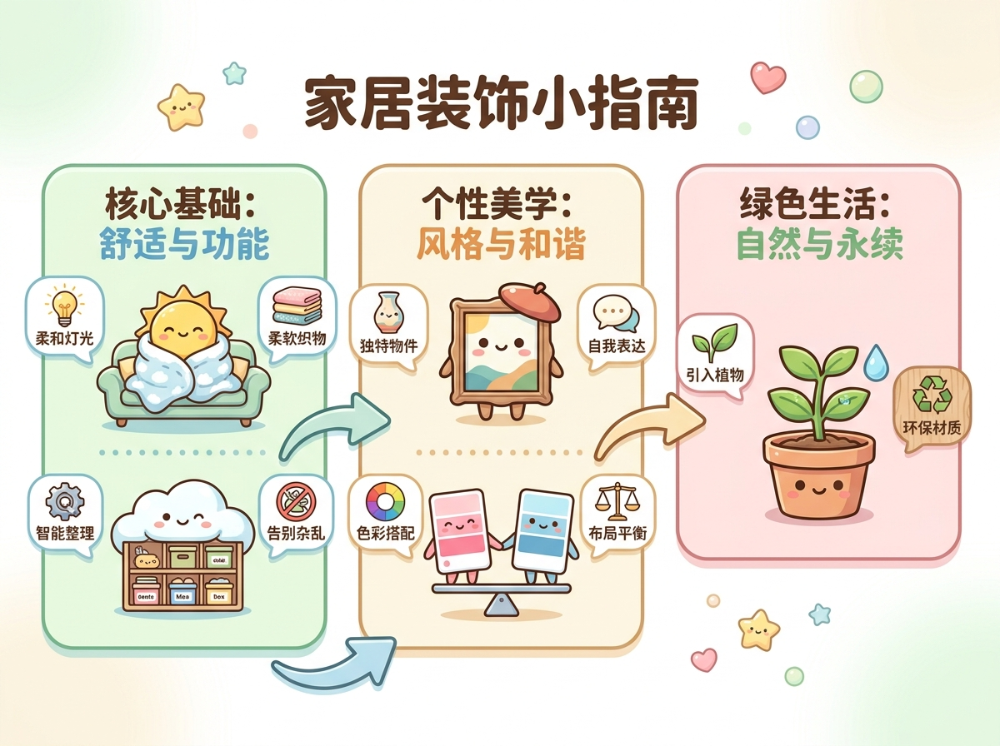
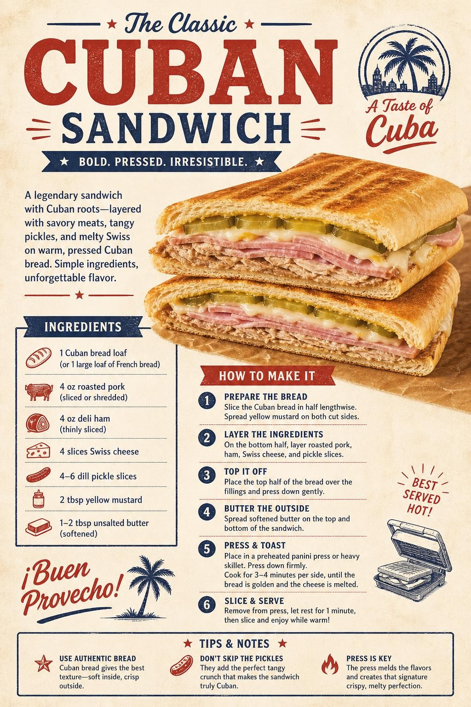
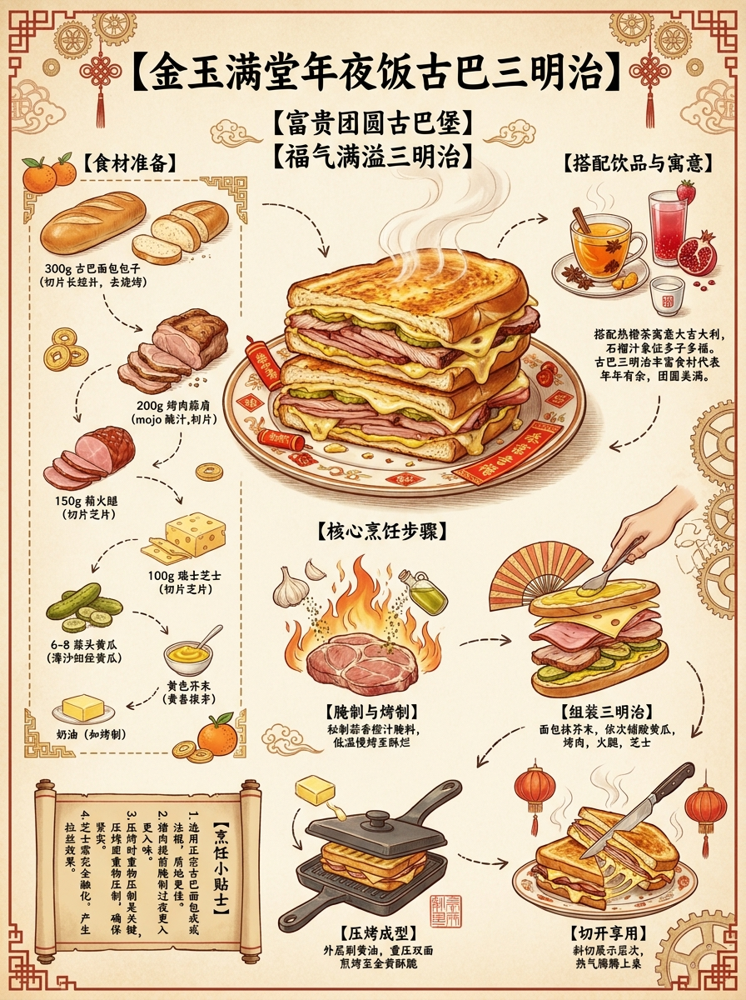
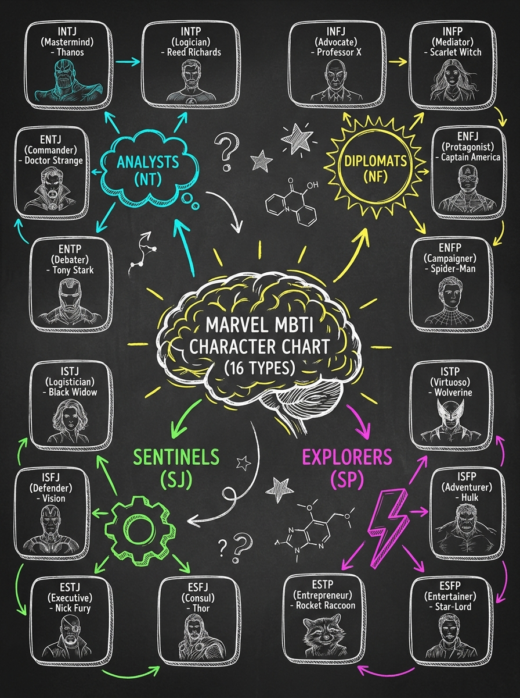
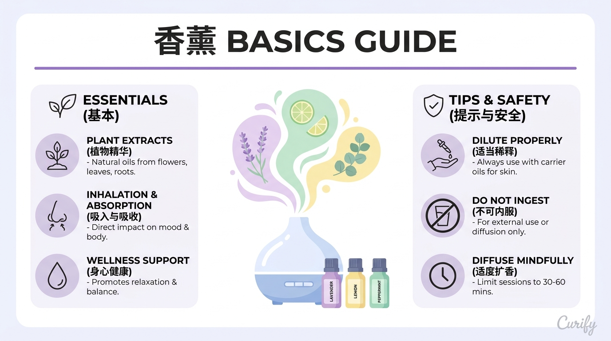

vir-v2-anchor-vir-s01单词
zh · core · high
GPT-direct · gpt-image-2

GPT-direct uses gpt-image-2. Curify uses routing/template prompts and gemini-3-pro-image-preview. Image backends are intentionally not controlled; routing Gold metrics remain separate.
vir-v2-anchor-vir-s01zh · core · high
vir-v2-anchor-vir-s02en · core · medium


vir-v2-anchor-vir-s03zh · core · medium


vir-v2-anchor-vir-s04zh · core · medium

vir-v2-anchor-vir-s05en · core · medium


vir-v2-anchor-vir-s06en · core · medium
vir-v2-anchor-vir-s07en · core · high


vir-v2-anchor-vir-s08en · core · medium


vir-v2-anchor-vir-s09en · core · low


vir-v2-anchor-vir-s10en · core · medium


vir-v2-anchor-vir-s11zh · core · high

vir-v2-anchor-vir-s12en · core · medium
vir-v2-anchor-vir-s13zh · core · medium


vir-v2-anchor-vir-s14en · core · medium

vir-v2-anchor-vir-s15en · core · low


vir-v2-anchor-vir-s16zh · content_gap · medium
abstained: 证件照需要上传本人照片，当前搜索页仅支持无需参考图的直接生成。

No image task.